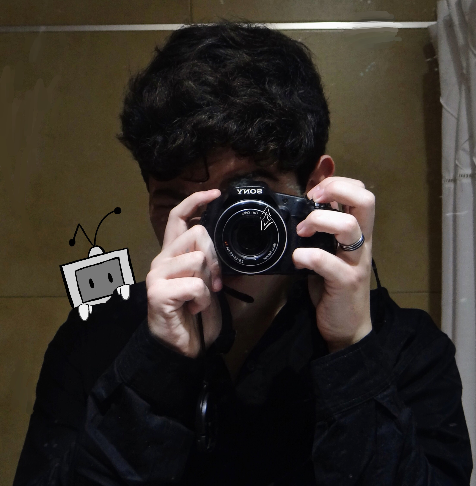

PORTFOLIO CREATIVO // MDP - ARG
Ideas que toman
DESARROLLO WEB · IDEAS EN MOVIMIENTO
Ideas que toman
forma propia.
Soy Ian Francano, Técnico en Programación (UTN) y estudiante de Ingeniería Informática (UNMDP). Diseño y desarrollo experiencias web pensadas para destacar, funcionar bien y dejar una impresión.
CURIOSIDAD, CÓDIGO Y CREATIVIDAD.
✦
✧

CH 01 / CREADORIAN FRANCANO
TRABAJO SELECCIONADO
Proyectos en escena.
Cada proyecto es una idea distinta. Elegí uno para conocerlo en funcionamiento.
✦ GRACIAS POR PASAR A VER MI TRABAJO ✦